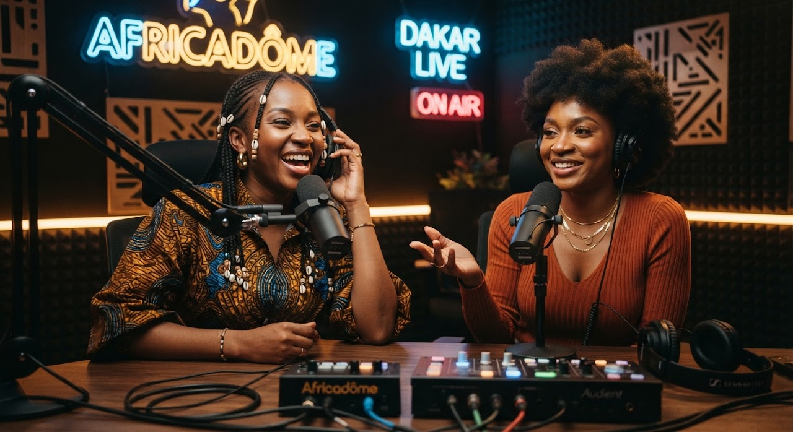
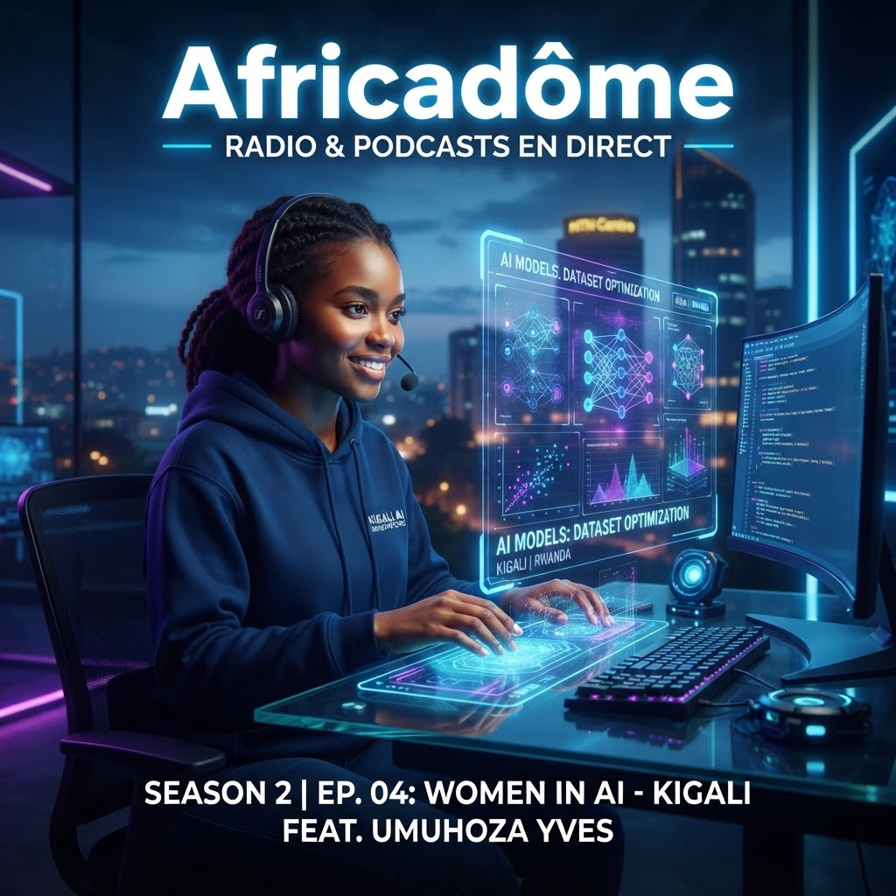
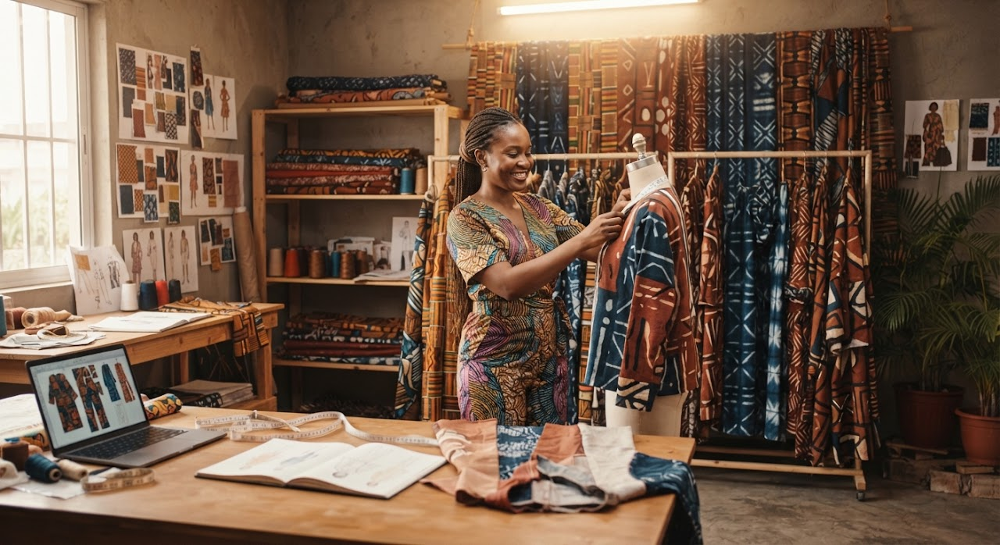
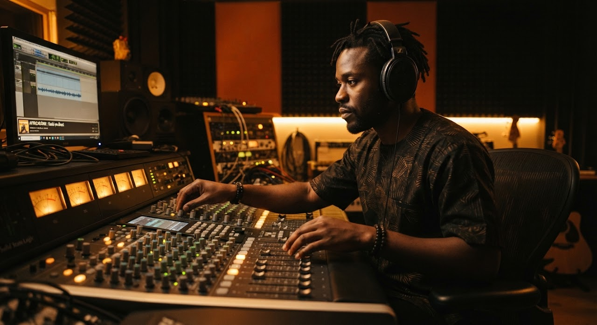
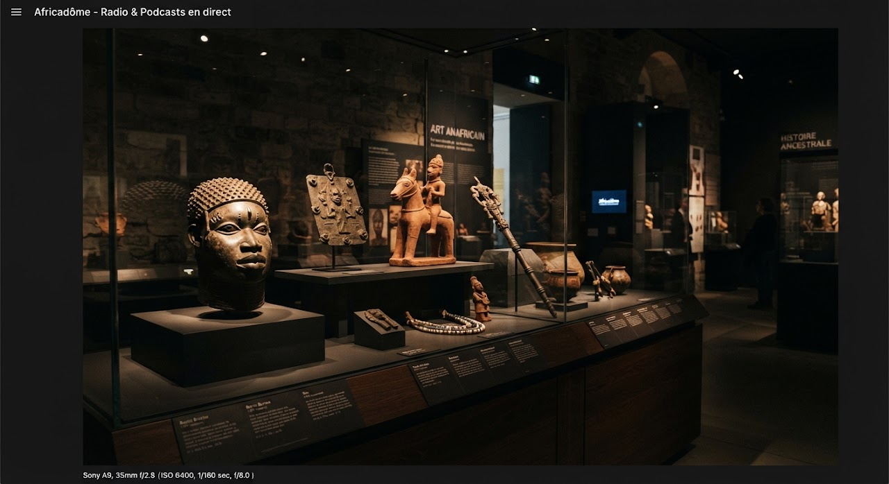
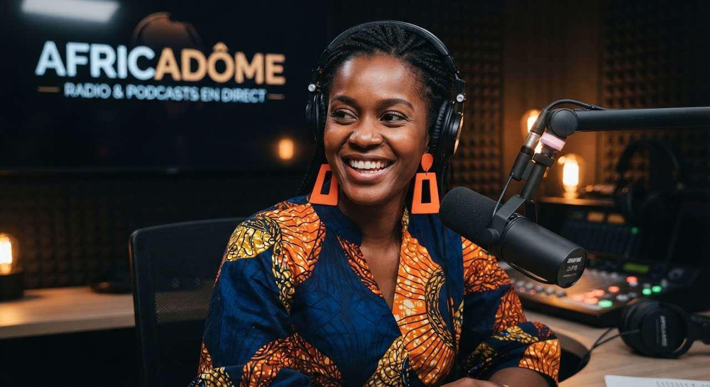
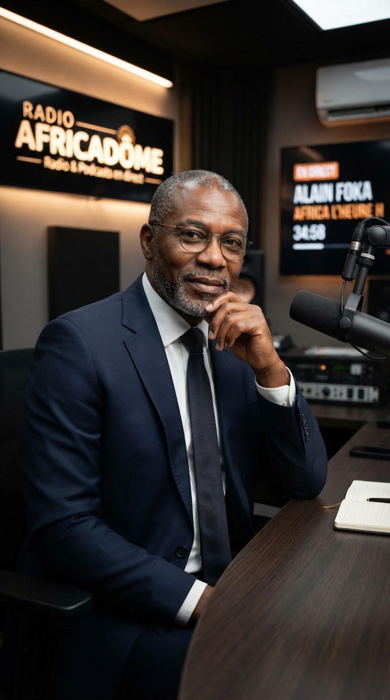
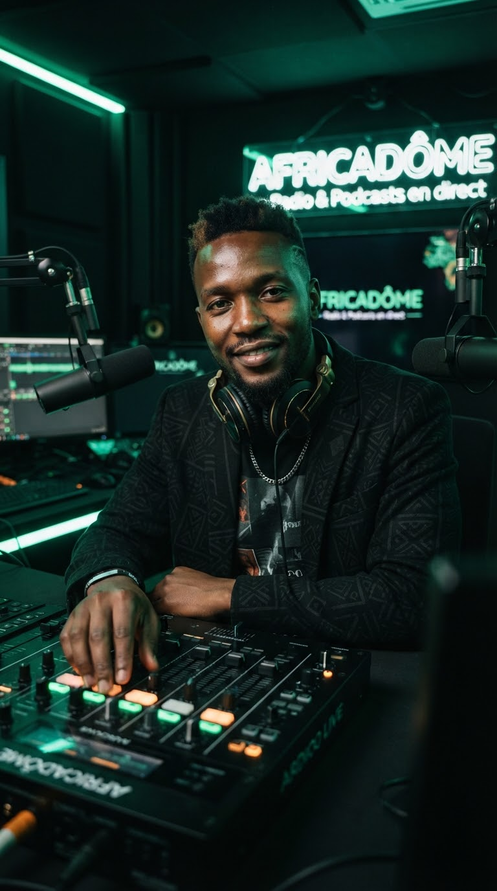
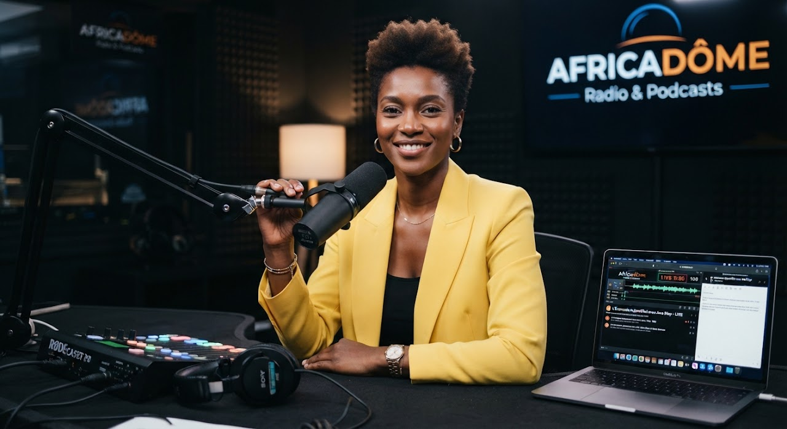
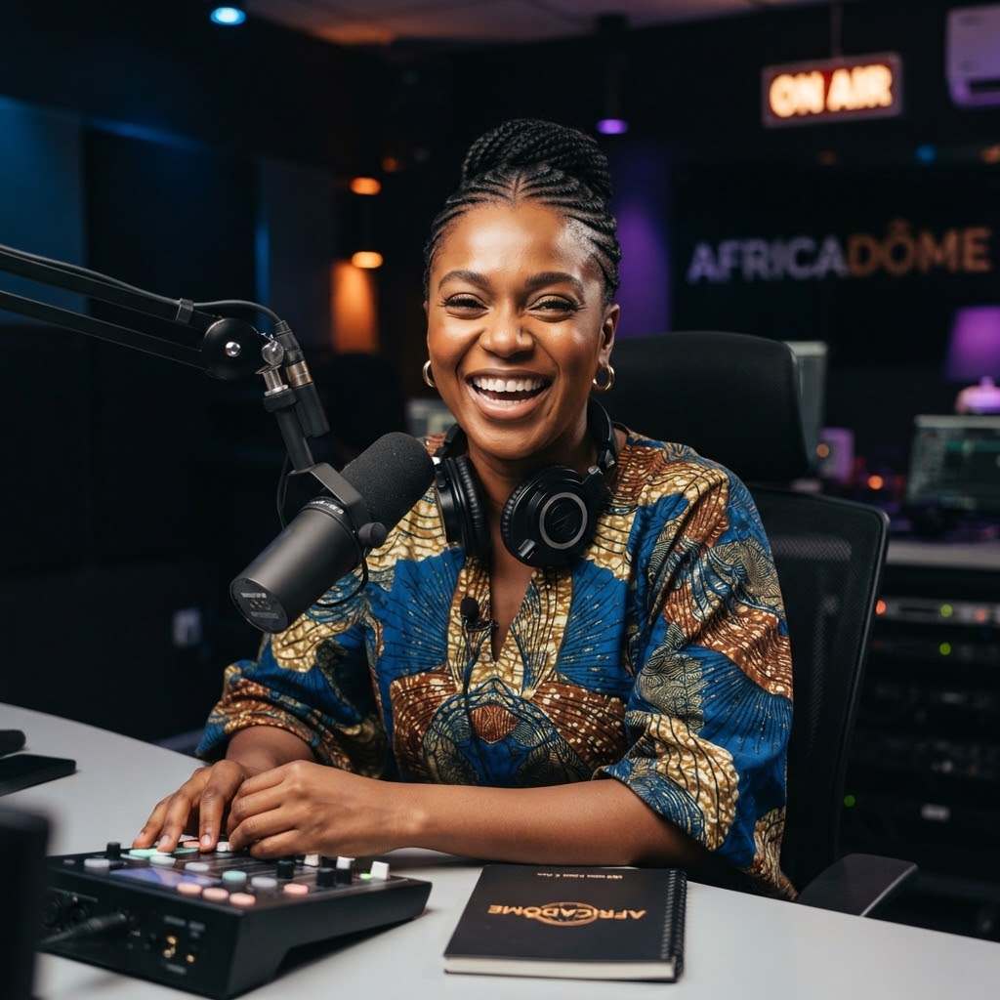

Afrobeats & émergencesAfro Inspiration
Avec Fatou Diallo & Kemi Adewale — le rendez-vous matinal des scènes musicales contemporaines, de Lagos aux clubs de Johannesburg.
5 webradios thématiques en direct
Des univers musicaux et d'analyses pensés pour chaque moment de votre journée.
Afro Inspiration
Afrobeats, amapiano et sonorités urbaines émergentes.
Creative Talks
Débats, masterclasses et entretiens de fond avec les bâtisseurs.
New Sounds
Pépites indépendantes, alté, gengetone & afro-électro.
Business & ICC
Économie de la création, financements et tech africaine.
Heritage & Rhythms
Musiques patrimoniales, acoustiques et traditions orales.
Podcasts à la demande
Envie d'écouter ? Laissez-vous inspirer par nos sélections , , ou … Ou bien pourquoi ne pas essayer l'un de nos Africadôme Originals ?
Les plus écoutés

Tech & IA • Ép. 18Comment l'IA générative transforme le cinéma nigérianAfricadôme
Société • Ép. 09Textiles africains : du tissage ancestral aux défilés de ParisAfricadôme
Musique • Ép. 44L'odyssée de l'amapiano : comment Pretoria a conquis les chartsAfricadôme
Histoire • Ép. 12Les trésors du royaume du Bénin : le chemin de la restitutionAfricadôme Creative Talks • Ép. 48IA générative et droits d'auteurOriginal
Creative Talks • Ép. 48IA générative et droits d'auteurOriginal Creative Talks • Ép. 47Afrobeats & conquête mondiale : qui contrôle les catalogues ?Original
Creative Talks • Ép. 47Afrobeats & conquête mondiale : qui contrôle les catalogues ?Original
Exclusivités Africadôme Originals
Voir plus Creative Talks • Ép. 46Financer le cinéma indépendantOriginal
Creative Talks • Ép. 46Financer le cinéma indépendantOriginal Série originaleSahel RhythmsOriginal
Série originaleSahel RhythmsOriginal Série originaleFintech & CréationOriginal
Série originaleFintech & CréationOriginal Série originaleParoles de griots 2.0Original
Série originaleParoles de griots 2.0OriginalInclus dans l'abonnement : les plus écoutés
 Afro InspirationLe best-of de la semaineInclus
Afro InspirationLe best-of de la semaineInclus Voix du terrainLa parole aux marchésInclus
Voix du terrainLa parole aux marchésInclus SciencesÉcouter le cosmosInclus
SciencesÉcouter le cosmosInclus New SoundsPantsula 2.0Inclus
New SoundsPantsula 2.0InclusAucun podcast dans cette catégorie pour le moment.
Voix & journalistes d'Africadôme
Rencontrez celles et ceux qui animent vos ondes et vos podcasts préférés.

Fatou Diallo
Dakar
Koffi Mensah
Lomé
DJ Moh
Nairobi
Awa Diop
AbidjanElhadj Traoré
Bamako
Kemi Adewale
LagosDiffusez votre podcast sur le réseau Africadôme
Bénéficiez d'une audience panafricaine, d'un accompagnement éditorial et de bourses de production originales.